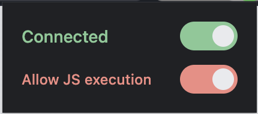

Watch the network
Kapture can now see the network. Turn on monitoring for a tab, drive the page however you like, then read back every request it made — with response bodies on demand. Chrome updates the extension automatically, so you already have it.
Network monitoring
Three new tools capture a tab's network traffic. Because the browser keeps no history, you turn monitoring on before the action you want to watch, then inspect what happened:
network_monitor— turn capture on or off for a tab. Watchers are tracked per client, so it stays on until everyone watching turns it off — and a client that disconnects is released automatically.network_requests— list the captured requests (url, method, status, type, size, timing). Poll just the new ones by passing back the cursor from the previous call.network_body— pull an individual request's bodies on demand, fetched live from the browser: the POST payload it sent and the response it got back.
Version 1.0
Earlier, v1.0 added the most-requested controls: running JavaScript, typing the way a person does, scrolling, and batching commands.
Run JavaScript in the page
The new evaluate tool runs JavaScript and returns the result, for the moments when no other tool quite fits. It stays off until you allow it: flip the red Allow JS execution switch in the toolbar popup or the DevTools panel. The grant is per tab and clears the instant that tab disconnects, so an assistant can never turn it on by itself.

Type like a real user
Three tools that go through the real keyboard pipeline, so they work on custom inputs and rich editors that ignore programmatic value-setting:
type— sends a string as individual keystrokesinsertText— drops in a whole block at once (great for large text and editors like Google Docs)clear— empties a field reliably
Scroll
The new scroll tool brings an element into view, or scrolls to an exact coordinate.
Compose: many commands in one call
The new compose tool runs a sequence of commands against a tab in a single call, one command per line, stopping at the first failure. Fewer round-trips for multi-step actions like fill, then click, then scroll.
Fixes & polish
- Back and forward now work reliably after navigating.
- The connection toggle no longer drifts out of sync with the actual state.
- Assorted dashboard and panel cleanups.